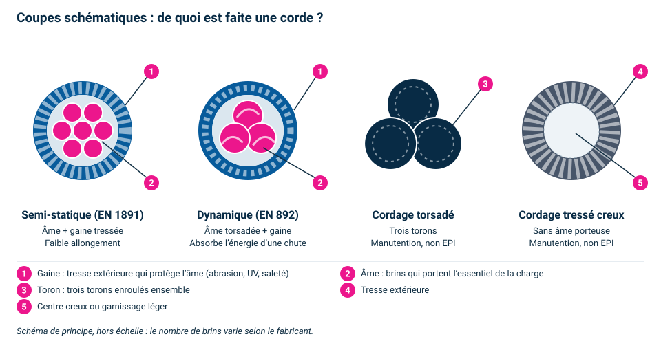
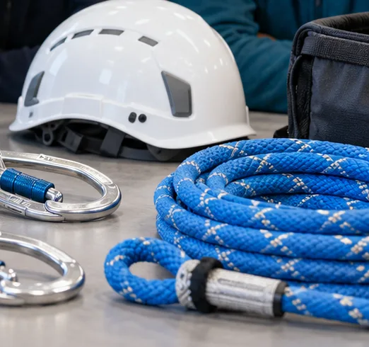
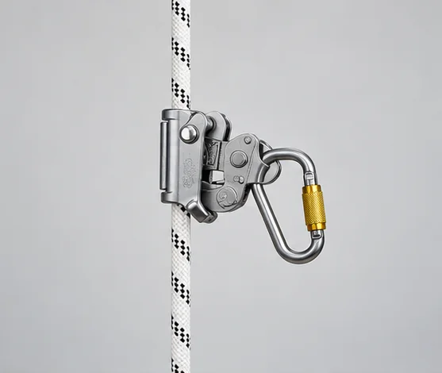

CONSULTEAM SECURITY · SECU37Travail en hauteur · Port du harnais
Matériel · Fiche simple
Cordes : types, contrôle et entretien
Une corde utilisée dans un système de protection est un équipement de sécurité : on sait ce qu’on a en main, on la contrôle avant chaque usage et on la range proprement. En cas de doute, on la met de côté.
De quoi est faite une corde ?

Coupes schématiques : la gaine protège, l’âme et la gaine travaillent ensemble. Touchez l’image pour l’agrandir.
Semi-statique : une âme de brins serrés et une gaine tressée. Faible allongement : choisir le produit et le système prescrits par la notice de l’appareil.
Dynamique : construction prévue pour l’allongement dynamique. Elle s’allonge et absorbe l’énergie d’une chute, ce qui convient à l’escalade.
Construction et fonction sont distinctes : toronnée, tressée ou âme-gaine décrit une construction, pas une autorisation d’usage. Un cordage de manutention non prévu pour la protection des personnes reste exclu ; identifier le produit exact et sa notice.

Corde, casque et connecteurs : l’ensemble se contrôle avant chaque usage. Illustration générée, non contractuelle.

Antichute mobile sur corde : seule la corde prescrite par le fabricant convient. Illustration générée, non contractuelle.
Quels types de cordes ?
Type
Allongement
Usage courant
À retenir
Statique ou semi-statique (EN 1891, type A ou B)
Faible
Ancrage, installation, travail sur corde, descente, manœuvres
Choix selon la notice de l’appareil ; le type B présente des performances inférieures au type A et appelle des précautions supplémentaires. Une corde seule ne constitue pas un système antichute.
Dynamique (EN 892)
Forte, elle absorbe l’énergie d’une chute
Escalade, alpinisme
Pas pensée pour le travail en suspension prolongée ni pour les points d’ancrage de chantier.
Corde de dispositif antichute mobile (EN 353-2)
Faible
Support d’un antichute mobile sur corde
Uniquement la corde prescrite par le fabricant du dispositif : on ne mélange pas.
Cordage de manutention (polypropylène, sisal…)
Variable
Guider ou hisser du matériel, balisage
Pas un EPI. Ne jamais s’y suspendre ni s’y retenir.
Les cordes de travail en hauteur sont le plus souvent à âme et gaine : l’âme et la gaine contribuent aux performances ; la gaine protège l’âme. Matière courante : polyamide ; autres matières possibles selon la notice.
Avant chaque utilisation
Vérification périodique. Lorsqu’elle fait partie du système de protection contre les chutes, la corde suit les contrôles de ce système : vérification datant de moins de douze mois à l’utilisation (arrêté du 19/03/1993), intervalle raccourci si nécessaire selon la notice et l’usage, personne compétente et trace écrite.
Entretien et stockage
À faire
Nettoyer avec l’eau, la température et les produits autorisés par la notice du modèle ; aucun détergent improvisé.
Rincer, puis sécher à l’air, à l’ombre, loin d’une source de chaleur.
Ranger dans un sac propre, au sec, à l’abri de la lumière.
Éviter les arêtes ; si le mode opératoire prévoit une protection de corde, vérifier son adéquation et son maintien. Une protection ne rend pas une arête compatible par défaut.
Noter chaque usage notable dans la fiche de vie.
À éviter
Marcher sur la corde ou la traîner au sol.
Contact avec acides, solvants, carburants ou produits ménagers.
Séchage au radiateur, au soleil ou avec une source de chaleur.
Frottement sur une arête, un angle ou une autre corde sous tension.
Stockage humide ou exposé aux UV.
Quand mettre une corde au rebut ?
Coupure de gaine ou âme visible.
Zone très raide, très molle ou aplatie.
Contact avec un produit chimique ou une source de chaleur.
Corde ayant subi une chute importante ou une forte charge.
Marquage illisible, historique inconnu ou doute sur son état.
Fin de la durée de vie indiquée par le fabricant.
Règle simple : une corde douteuse est retirée du service, marquée « HS » et signalée. Elle n’est pas réutilisée « pour un petit usage ».
Comment les cordes sont fabriquées et testées
Fabrication, en bref
Fibres de polyamide, contrôlées à la réception.
Retordage : les fils sont tordus pour donner leurs propriétés mécaniques.
Tressage de l’âme, puis de la gaine autour d’elle.
Thermofixage : la chaleur règle l’élasticité et équilibre le retrait de l’âme et de la gaine.
Marquage et prélèvements d’échantillons testés jusqu’à la rupture.
Lire une fiche technique sans confondre les essais
La résistance avec un nœud, celle avec une terminaison cousue, l’allongement et les chutes d’essai correspondent à des conditions distinctes. Ce ne sont pas des charges de travail autorisées.
Exemple de fiche fabricant : AXIS 11 mm, EN 1891 type A. Le fabricant publie séparément 19 kN avec un huit, 22 kN avec terminaison cousue, et un nombre de chutes d’essai de facteur 1. Le facteur 0,3 sert à une autre mesure : la force de choc. Ces données ne s’extrapolent pas à une autre corde.
Les essais sont des données de laboratoire, distinctes d’une charge de travail autorisée. L’exemple AXIS ci-dessus est rattaché à sa fiche fabricant ; les autres références doivent être vérifiées dans leur notice.
Vidéos du fabricant
Cordes BEAL : présentation par le fabricant et par un distributeur. Site du fabricant : beal-planet.com.
FR
Les cordes et technologies BEAL (escalade, canyoning, spéléologie…)
Liens trouvés par recherche, à contrôler avant diffusion. Ces pages décrivent surtout les cordes d’escalade et de travaux sur cordes ; la notice du fabricant reste la référence de votre corde.
Repères
Un nœud diminue la résistance d’une corde (variable selon le nœud, le matériau et la construction).
Les durées de vie et les périodicités dépendent de la notice du fabricant et de l’usage.
Références : EN 1891 (cordes semi-statiques), EN 892 (cordes dynamiques), EN 353-2 (antichute mobile sur support flexible), R.4323-99 à R.4323-103 (vérification des EPI), notices des fabricants.
L’aspect ne qualifie pas la corde
Deux cordages d’aspect proche peuvent avoir des fonctions différentes. Le fabricant Kratos décrit par exemple une longe HOPE FA3020015 en corde polyamide toronnée avec absorbeur, EPI selon sa fiche. Cela ne rend pas utilisable un cordage toronné inconnu.
Question terrain : référence, fonction, notice et compatibilité sont-elles établies ? Sans ces informations, aucune suspension ni retenue d’une personne.